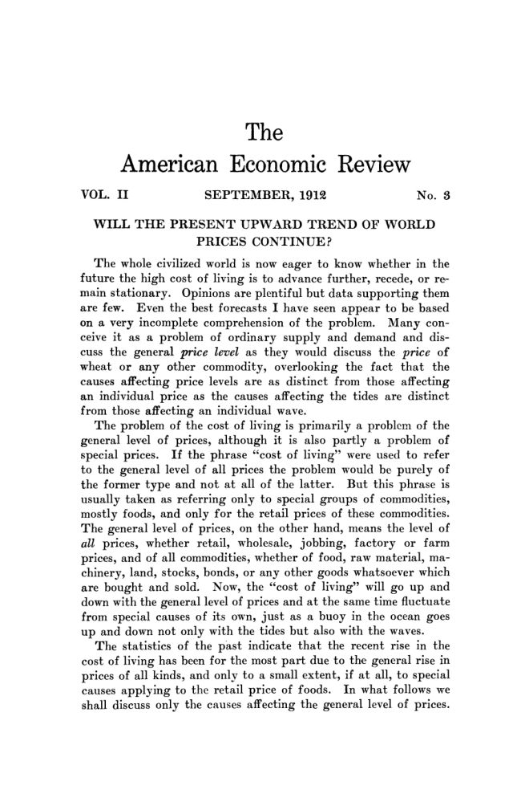

Fisher, 1912: a alta dos preços vai continuar?
Leitura: 8 min
Fisher decompõe o nível de preços mundial em moeda, depósitos, velocidades e comércio e conclui que, com a expansão dos cheques, os preços subiriam cerca de 2% ao ano por quinze anos.


Num discurso em Londres, em 1907, Lord Cromer contou o caso de um proprietário rural egípcio que comprou uma terra por £ 25.000. Meia hora depois de assinado o contrato, apareceu com uma fila de burros carregando o dinheiro, que estivera enterrado no seu jardim. Irving Fisher, da Yale University, recolhe a história do relatório do diretor da Casa da Moeda americana e a usa como prova de uma tese: o entesouramento estava em declínio, e com ele cairia um freio à alta dos preços.
A pergunta do artigo é a que, diz Fisher, o mundo civilizado inteiro queria ver respondida: o alto custo de vida vai subir, recuar ou ficar parado? As opiniões eram muitas e os dados poucos.
O que determina o nível geral de preços?
Fisher separa o nível geral de preços dos preços particulares. O custo de vida, que costuma se referir a preços de varejo de alimentos, sobe e desce com o nível geral, como uma boia sobe com a maré, mas também oscila por causas próprias, como as ondas. O artigo trata só da maré.
Pela equação de trocas, exposta no seu livro The Purchasing Power of Money, o nível de preços é determinado por cinco grandezas: a moeda em circulação, os depósitos movimentados por cheque, a velocidade de cada um e o volume de comércio. Trustes, tarifas, sindicatos, intermediários, armazenagem a frio ou armamentos só influem nos preços na medida em que afetam essas cinco.
Para Fisher, “o nível de preços não depende diretamente do ritmo de produção de ouro, mas do estoque de ouro e de outras moedas”. (“The price level does not depend directly on the rate of gold production but on the stock of gold and other money.”)
Daí a imagem do lago: ele não para de subir quando a enchente que o alimenta atinge o pico, mas enquanto a entrada superar a saída. Supor que os preços cairão assim que a produção de ouro diminuir é, para Fisher, um erro grosseiro.
Quanto cresciam a moeda e os cheques?
Para os Estados Unidos, Fisher repete os números de um artigo de junho de 1912 na mesma revista. Entre 1896 e 1911, os depósitos sujeitos a cheque cresceram 7,3% ao ano e o uso de cheques 9,5%, ambos bem acima do comércio, com 5,3%, que por sua vez superou a moeda, com 4,2%.
Para o resto do mundo do padrão-ouro, não havia dados completos. Fisher estima taxas de crescimento, e não valores absolutos, a partir de relatórios do Comptroller of the Currency, estatísticas de compensação bancária, cartas postais, receitas ferroviárias, comércio exterior e tonelagem de navios. Divide o mundo em três grupos: os países de língua inglesa, que usam muito o cheque; a Europa continental e o Japão, que começavam a usá-lo; e os demais, sobretudo a Índia, que quase não o usavam. Admite discrepâncias grandes, que atribui sobretudo a erros na medida do comércio, e faz ajustes que declara arbitrários.
Por que o ouro não seria o freio?
Fisher examina cada fator. Sobre o ouro, registra opiniões divergentes de especialistas e conclui que a produção não cairia depressa nem de repente, acrescentando pelo menos 2% ao ano ao estoque monetário. Qualquer reforma do sistema monetário americano, como a proposta pela National Monetary Commission, liberaria reservas e também tenderia a elevar os preços.
A Índia e o Egito, que absorviam ouro e o entesouravam, eram apontados por outros como um escoadouro capaz de deter a alta. Fisher responde que esse escoadouro não impedira a subida no passado e tenderia a enfraquecer: com a difusão dos bancos, o entesouramento sairia de moda, como já ocorrera na Inglaterra e, mais recentemente, na França. No Egito, os depósitos das caixas econômicas postais passaram de US$ 190.000 em 1901 para US$ 2.250.000 em 1910.
Por que os cheques pesam tanto?
O fator mais negligenciado, diz Fisher, é o cheque. Os depósitos que circulam por cheque são uma forma de moeda, e nos Estados Unidos já respondiam por 92% de todas as transações. O mundo atravessava uma longa transição em que o cheque substituía a moeda em ritmo prodigioso; mesmo na Inglaterra os depósitos cresciam, e na Alemanha e no resto do continente havia um vasto campo para a expansão bancária.
A velocidade dos depósitos também crescia com a concentração da população em cidades. Pelos dados de Fisher e de Pierre des Essars, a rotação dos depósitos passava de 100 vezes ao ano em Paris, Berlim e Bruxelas, mas era de 16 em New Haven, de quatro em Atenas e de uma em Santa Barbara, na Califórnia.
O único fator que contém os preços é o volume de comércio, e Fisher não vê razão para que ele cresça mais depressa: a ocupação das terras e o crescimento mais lento da população tenderiam a freá-lo, e o comércio internacional, que mais se beneficia dos transportes, é uma franja pequena do total.
Qual é a chance de os preços não subirem?
Fisher monta dois cenários para quinze anos. No provável, com taxas um pouco menores que as recentes para moeda e depósitos, os preços subiriam 2% ao ano, de 100 em 1911 para 134 em 1926, um aumento de um terço. No conservador, em que todos os fatores de alta crescem o mínimo razoável e o comércio o máximo razoável, os preços ficariam estáveis, mas não cairiam.
Para estimar a probabilidade, Fisher compara os cinco fatores a cinco moedas lançadas ao ar: a chance de todas darem cara é uma em 32. Com um cálculo mais completo, que admite desvios prováveis de meio ponto, conclui que a chance de os preços não subirem em quinze anos é menor que uma em cem.
A alta não seria contínua. Fisher espera interrupções por crises a cada década, como a de 1907, e vê sinais de crédito distendido no Canadá e na Alemanha. Prevê também ajustes no comércio internacional: a alta menor na Inglaterra estimularia as exportações britânicas, e o contrário ocorreria nos Estados Unidos, no Canadá e na Alemanha.
Fisher encerra: “creio que o mundo como um todo está destinado a ver, por muitos anos, uma maré de preços em rápida subida”. (“I believe the world as a whole is destined to see for many years to come a rapidly rising tide of prices.”)
Na minha leitura
Na minha leitura, a força do artigo está no método: Fisher transforma uma pergunta difusa sobre o custo de vida numa decomposição contábil, e obriga cada argumento, do ouro egípcio às cidades europeias, a passar por uma das cinco grandezas. Isso torna explícito o que cada previsão supõe e onde ela pode falhar. O próprio Fisher mostra os limites: as taxas do resto do mundo são aproximações, a velocidade dos depósitos tem estimativas que ele considera sem valor, e os ajustes finais dependem de seu juízo.
O ponto mais interessante, para um economista de hoje, é a ênfase no crédito bancário. Fisher percebe que a moeda relevante já não era o metal, mas os depósitos, e que a transição para o cheque podia elevar os preços mesmo com o ouro crescendo menos. É uma intuição sobre a importância da moeda criada pelos bancos que segue no centro da discussão monetária.
Glossário
- Equação de trocas
- MV + M'V' = PT: moeda vezes velocidade, mais depósitos vezes sua rotação, igual a preços vezes comércio.
- Velocidade de circulação
- número de vezes que uma unidade de moeda troca de mãos num ano.
- Atividade dos depósitos
- termo de Fisher para a velocidade de rotação dos depósitos movimentados por cheque (V').
- Entesouramento
- guarda de moeda ou metal fora de circulação, que reduz a velocidade efetiva.
- Padrão de câmbio-ouro
- regime em que um país mantém a moeda conversível em ouro por meio de reservas e câmbio, sem cunhagem ampla de ouro, como a Índia.
- Compensação bancária
- liquidação mútua de cheques entre bancos, usada por Fisher como indicador do uso de cheques.
Fontes
- Will the Present Upward Trend of World Prices Continue? — Irving Fisher (Yale University) (pp. 531–558). JSTOR · Internet Archive (PDF)
- Edição completa, com os demais artigos: Nº 120 do Arquivo.
Documento em domínio público (EUA, publicado antes de 1931), via JSTOR Early Journal Content e Internet Archive. Resumo e comentário do autor deste site, sem afiliação com a American Economic Association. Encontrou um erro? Escreva: a correção é publicada no próprio texto, com data.
↑ Nº 120 · Setembro de 1912: a maré dos preços, o algodão e a tarifa Young, 1912: o que resta da teoria de Jevons? →